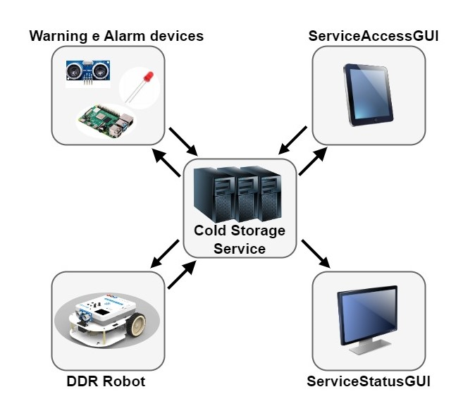
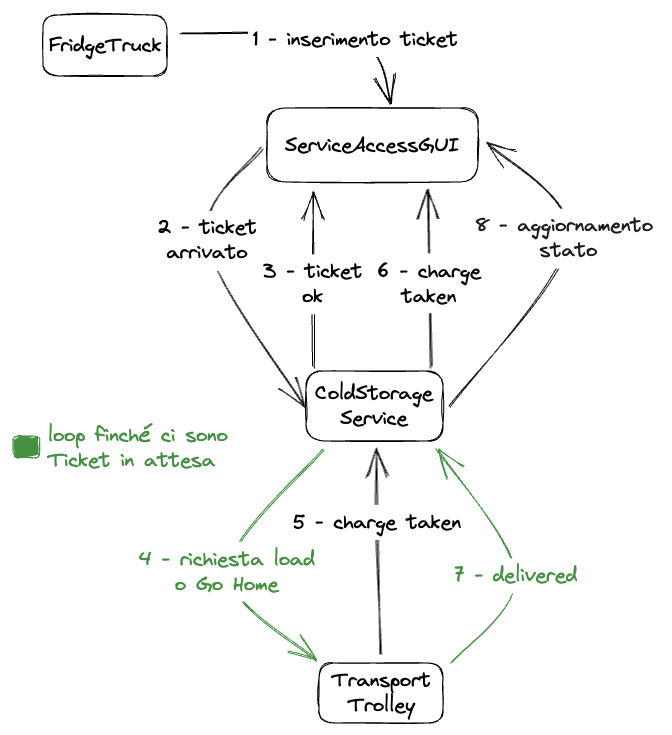
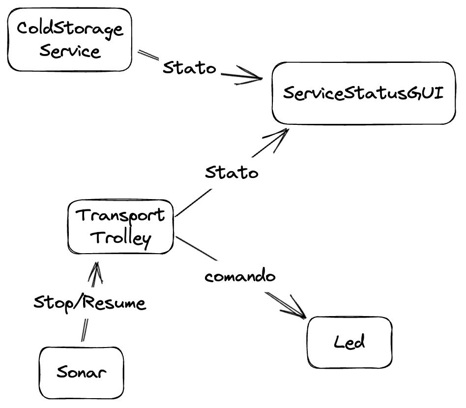

Introduction
Lo Sprint0 si concentra sull'analisi dei requisiti forniti dal cliente in modo tale da delineare in modo generale la struttura del sistema richiesto. Per fare ciò verranno quindi riportate le considerazioni e chiarimenti avute durante l'analisi del TemaFinale23.Una volta definita senza ambiguità la richiesta del committente, si può delineare tramite dei macro-componenti la struttura complessiva. Alla fine dello Sprint0 si fornisce dunque un piano di lavoro che programmerà gli Sprint successivi, delineando così il core-business del progetto.
Requirements
Descrizione del
TemaFinale23
Goals dello sprint 0 :
- Identificare i componenti principali del servizio ColdStorageService
- Formulare un modello di interazione dei componenti individuati e quindi fornire un'architettura logica
- Valutare criticamente i requisiti
- Valutare le difficoltà di realizzazione dei componenti
- Pianificare il lavoro
- Sviluppare un prototipo su base non distribuita
Requirement analysis
Lo scopo del progetto finale è quello di creare e gestire un ColdStorageService.Chiarimenti del committente
L'interazione con il committente ha permesso di chiarire alcuni aspetti del progetto:- Il conducente del camion è un operatore umano esterno al sistema;
- Il camion appena arrivato deve essere scaricato il prima possibile;
- Il messaggio inviato dal conducente del camion tramite un smart device è invece parte del sistema;
- Quando il Cold Room container è pieno, non bisogna scaricare i camion in arrivo;
- ColdStorageService potrebbe ricevere una nuova richiesta mentre sta ancora elaborando l'azione di deposito della precedente;
- Il robot ha una massima capacità di peso che può trasportare, se il carico del camion supera quel valore occorre fare più giri;
- I percorsi effettuati dal robot non devono essere necessariamente ottimali, ma non devono essere eccessivamente lunghi;
- Le posizioni del robot possono essere rappresentate con un sistema di cordinate oppure con indicazioni qualitative, come "at INDOOR", "at HOME" e "at Cold Room";
- La stanza presa in considerazione presenta due ostacoli statici, le cui coordinate sono conosciute;
- Le posizioni degli elementi: INDOOR, HOME e Cold Room, sono conosciute a priori;
- Il service manager è un operatore umano esterno al sistema;
- I messaggi inviati allo smart device del service manager che consentono la supervisione del sistema sono invece parte del sistema;
- La ServiceStatusGUI è accessibile solo al service-manager;
- Il sonar e il Led NON sono sul trolley, bensì su un Rasberry Pi separato;
- Il trolley si deve fermare "il prima possibile", quando il sonar trasmette un alarm;
- La ServiceAccessGui è unica e condivisa da tutti i conducenti del camion;
- Il DDR Robot e il Transport Trolley non sono la stessa cosa;
Da chiarire con il committente
- Va presupposto che il Ticket sia inserito, in maniera onesta, dal conducente solo davanti all'INDOOR? E dunque in quanto analisti e progettisti non ci dobbiamo preoccupare che un conducente inserisca il Ticket prima di essere davanti all'INDOOR?
- Chi si occupa di accorgesi di far fare più giri al trolley nel caso il carico superi la capacità massima del robottino?
- La ServiceAccessGUI deve essere pensata principalmente per dispositivi mobile?
- Quando il Trolley sta andando in HOME ed una richiesta di andare in INDOOR arriva: il Trolley deve aspettare di arrivare in HOME per poi andare in INDOOR oppure deve essere avvisato istantaneamente di andare in INDOOR?
Dizionario
NOMI:
| Termini | Descrizioni |
|---|---|
| ColdStorageService | Il ColdStorageService è un Sistema Distribuito e corrisponde all'entità del sistema che coordina il comportamento degli altri componenti implementando la business-logic dell'applicazione. Definisce il prodotto finale che soddisfa tutti i requisiti forniti dal committente. |
| Service area | Superficie piatta, rettangolare, con ostacoli fissi e circoscritta da 4 pareti. Definisce la
zona di manovra del Transport Trolley ed è inoltre composta da:
|
| Ostacolo | Un ostacolo è un oggetto che limita l'area percorribile dal Transport Trolley |
| INDOOR | Posizione identificata su una parete della Service Area adibita allo scambio di alimenti dal Fridge Truck al Transport Trolley. |
| PORT | Posizione della Service Area identificata su una faccia della ColdRoom utilizzata per scaricare gli alimenti dal Transport Trolley. |
| HOME | Posizione identificata sul pavimento della Service Area che identifica la zona dove il robot risiede alla partenza o in attesa di nuove richieste. |
| Transport Trolley | Componente logico di astrazione e controllo di un DDR Robot. |
| DDR robot | Differential Drive Robot (DDR), è un robot fisico fornito dal committente che permette di svolgere un'azione di deposito. È in grado di muoversi all'interno della Service Area grazie al software BasicRobot, anch'esso fornito dal committente. È di forma quadrata con lato di lunghezza RD, ed è inizialmente posizionato nella sua posizione HOME. Può muoversi in avanti, indietro, fermarsi e ruotare di 90°. |
| RD | Lunghezza di ogni lato del DDR Robot. |
| Alimenti | Contenuto del carico che il Transport Trolley gestisce. |
| ColdRoom | Una stanza o un ambiente appositamente progettato e controllato termicamente per conservare e mantenere la temperatura dei prodotti alimentari a bassa temperatura. Costituisce la destinazione del materiale ritirato dal Transport Trolley al punto di INDOOR. |
| MAXW | Quantità massima di alimenti espressa in Kg che la Cold Room è in grado di immagazzinare. |
| Azione di deposito | Sequenza di azioni del Transport Trolley che vengono eseguite ogni volta che un Fridge
Truck è
pronto per scaricare il carico:
|
| FW | Peso del carico espresso in Kg. |
| Fridge Truck | Entità generica esterna al sistema che consente di scaricare una quantità pari a FW Kg di alimenti. |
| Conducente del Fridge Truck | Entità esterna al sistema definita come essere umano alla guida del Fridge Truck. |
| Carico | Quantità in kg di alimenti che viene depositato dal Fridge Truck presso l'INDOOR. |
| ServiceAccessGUI | Interfaccia grafica utilizzata dai conducenti del Fridge Truck per interagire con il ColdStorageService al fine di scaricare il carico. |
| Ticket | Identificatore univoco della richiesta del conducente del Fridge Truck al ColdStorageService per consentire lo scarico del carico. |
| TICKETTIME | Tempo di validità del Ticket, espresso in secondi. |
| ServiceStatusGUI | Interfaccia grafica utilizzata dal Service-manager per supervisionare lo Stato della Service Area. |
| Service-manager | Entità esterna al sistema, definita come essere umano che svolge il compito di monitorare lo Stato della Service Area attraverso la ServiceStatusGUI. |
| Stato della Service Area | Informazioni sul sistema ad un preciso istante di tempo, che includono:
|
| Sonar | Componente fisico fornito insieme al suo software dal committente. È un sensore in grado di rilevare la distanza utilizzando gli ultrasuoni. |
| Led | Componente fisico fornito insieme al suo software dal committente. È un particolare diodo in grado di emettere luce. |
| RaspberryPi | Single-board computer in particolare un Rasberry Pi 2 Model B. (Link: https://www.raspberrypi.org/). |
| Stato del Transport Trolley | Informazione riguardante l'azione svolta dal Transport Trolley, visibile anche grazie al
Led. Può essere:
|
| DLIMT | Distanza limite misurata dal Sonar. È usata per fermare il Transport Trolley. |
| Warning Device | Componente astratto che utilizza il Led (attraverso il software fornito dal cliente) e sarà installato su un Raspberry Pi. Fornirà informazioni sullo attuale Stato del Transport Trolley. |
| Alarm Device | Componente astratto che utilizza il Sonar (attraverso il software fornito dal cliente) e sarà installato su un Raspberry Pi. Quando misura una distanza inferiore a un valore prefissato DLIMIT, il Transport Trolley deve essere fermato. Verrà ripreso quando il Sonar rileva nuovamente una distanza superiore a DLIMIT. |
| MINT | Tempo espresso in millisecondi che identifica l'intervallo minimo che può intercorrere tra due stop consecutivi del Transport Trolley. |
VERBI:
| Soggetto | Termine | Descrizione |
|---|---|---|
| Led | Accendere | Accensione del Led che emette luce. |
| Spegnere | Spegnimento del Led che non emette luce. | |
| Lampeggiare | Il Led si accende e spegne rapidamente in sequenza. | |
| Sonar | Misurare la distanza | Il Sonar tramite ultrasuoni rileva la distanza che intercorre tra il sonar stesso ed un ostacolo. |
| Fermare l'attività | Il Transport Trolley, durante lo spostamento in avanti o all'indietro, può essere fermato a causa del dispositivo di allarme. Mentre il Transport Trolley è fermo, non può muoversi fino a quando non si verifica un messaggio di ripresa. | |
| Riattivare l'attività | Il Transport Trolley riprende l'azione di scarico, riprendendo dal momento esatto in cui si era fermato. | |
| Transport Trolley | Essere pronto | Il Transport Trolley è in condizioni di servire una nuova operazione di scarico. |
| Essere in movimento | Il Transport Trolley si sta muovendo all'interno della Service Area, si considera in movimento anche quando è fermo ma sta svolgendo una azione. Durante questa fase devono essere soddisfatti gli Alarm requirements. | |
| Terminare l'azione di scarico | Il Transport Trolley ha completato una azione di scarico ed è pronto per gestire una nuova richiesta se presente, altrimenti ritorna in HOME. | |
| Raccogliere il carico | Il Transport Trolley si trova in INDOOR e prende il carico impiegandoci il tempo necessario ed avendo cura di non superare la sua capacità massima di trasporto. | |
| Depositare il carico | Il Transport Trolley si trova in PORT della Cold Room e scarica il carico impiegandoci il tempo necessario. | |
| Fare un'azione di carico-scarico | Il task effettuato dal Transport Trolley consiste di 3 azioni:
|
|
| ColdStorageService | Avviare il sistema | Viene avviato il software del sistema ed il Transport Trolley risulta posizionato in HOME. |
| Inviare una risposta di storage | Azione che si verifica quando il sistema riceve una richiesta di storage. Il
ColdStorageService
risponde con una risposta che può essere:
|
|
| Invio charge taken | Il sistema comunica al conducente del Fridge Truck che il carico è stato correttamente ritirato. | |
| ServiceAccessGUI | Inviare una richiesta di storage | Il conducente del Fridge Truck si avvicina all'area INDOOR del servizio e chiede al sistema ColdStorageService (tramite un dispositivo intelligente) se può depositare un carico di FW kg. |
| Inviare il Ticket | Il conducente del Fridge Truck invia il proprio Ticket al sistema. | |
| ServiceStatusGUI | Ricevere un messaggio di stato | La ServiceStatusGUI riceve un messaggio con lo Stato del Transport Trolley, il peso della Cold Room e il numero di richieste di store rifiutato. |
Service Area
Data la descrizione della stanza e l'immagine fornita dal committente, si è deciso di modellare la Service Area come un rettangolo, circoscritto da 4 mura, contentente due ostacoli fissi di cui uno è la Cold Room.
Sistema
Dall'analisi del TemaFinale23, è possibile effettuare una bozza della struttura del sistema, il quale presenterà 5 macro-componenti:- Warning e Alarm Devices
- ServiceAccessGui
- ServiceStatusGui
- DDR Robot
- ColdStorageService

Interazioni
Partendo dal testo del TemaFinale23 mostriamo graficamente le interazioni tra i componenti del sistema, in modo da agevolare la modellazione del sistema stesso. Questi schemi servono solo a chiarire le interazioni e non vogliono dunque vincolare alcuna scelta di progettazione.Dai requisiti è possibile identificare 4 momenti di interazione tra i componenti del sistema:
- Viene effettuato dal conducente del Fridge Truck una richiesta di store utilizzando la
ServiceAccessGUI.

- Quando il conducente del Fridge Truck arriva all'INDOOR, inserisce il Ticket ed innesca le azioni di
carico e scarico della merce presente nel Fridge Truck.
 - Il Service-manager utilizza la ServiceStatusGUI per monitorare il sistema.

Analisi del Problema
Analisi Interazioni
- Possiamo considerare come Momento 0 (non mostrato nella sezione precedente) quello che coincide
con l'avvio del sistema, durante il quale la ColdStorageService comunicherà alla
ServiceAccessGUI lo stato della Cold Room. Ciò è necessario
poichè all'avvio la Cold Room potrebbe non essere necessariamente totalmente vuota.
La comunicazione tra i due componenti potrebbe essere vista come un'interazione tra due attori, e dunque o tramite Dispatch, emanato dalla ColdStorageService alla ServiceAccessGUI, oppure tramite una Request-Reply, inviato dalla ServiceAccessGUI al ColdStorageService. - Il Momento 1 prevede la richiesta di store da parte del Fridge truck.
La ServiceAccessGUI in quanto GUI occorre utilizzarla principalmente come componente Reattivo, ovvero in grado di reagire ai comandi inviati dal Fridge Truck o dalla ColdStorageService.
Si decide dunque che l'invio dello stato della Cold Room e la verifica della disponibilità di spazio venga effettuata dalla ColdStorageService. -
Il Momento 2 prevede che il Fridge Truck arrivi all'INDOOR e inserisca il Ticket.
La ServiceAccessGUI continua ad essere modellata come un componente reattivo che si limita a mettere in comunicazione il Fridge Truck con la ColdStorageService. La logica di gestione del Ticket viene dunque gestita dalla ColdStorageService, il quale si occupa di verificarne la correttezza e la validità. La ColdStorageService si occuperà inoltre di inoltrare il messaggio "charge taken", proveniente dal Transport Trolley, al Fridge Truck, in modo da consentire a quest'ultimo di lasciare l'INDOOR.
Per aggiornare la ServiceAccessGUI sullo stato della Cold Room, la ColdStorageService invierà un messaggio di update (messaggio 8 dell'immagine) alla ServiceAccessGUI. -
Il Momento 3 prevende che il Service-manager utilizzi la ServiceStatusGUI per monitorare il
sistema.
Se si decide di modellare la ServiceStatusGUI come un componente Reattivo, che si limiti a ricevere informazioni dal sistema, è necessario utilizzare o un pattern Observer, che agisca ad ogni cambiamento di stato, oppure un pattern Dispatch in modo da consentire al sistema di notificare la ServiceStatusGUI di ogni cambiamento di stato.
Un'altra opzione può essere un periodico polling delle informazioni tramite Request-Reply, in modo da consentire alla ServiceStatusGUI di richiedere direttamente lo stato del sistema.
Attori
Dati i requisiti del TemaFinale23 e le interazioni appena definite, si è deciso di modellare il sistema tramite il modello ad attori QAK. Gli attori identificati sono:| Attore | Type |
|---|---|
| ServiceAccessGUI | Reattiva |
| ServiceStatusGUI | Reattiva |
| Transport Trolley | Proattivo e Reattivo |
| ColdStorageService | Proattivo e Reattivo |
| BasicRobot | Reattivo |
| Sonar | Proattivo |
| Led | Reattivo |
| Attore di Test | Type |
|---|---|
| Test Truck | Proattivo |
- Reattivo: entità che agisce in risposta ad una situazioni piuttosto che controllarla.
- Proattivo: entità che crea o controlla una situazione piuttosto che rispondere passivamente dopo che si è verificata.
Codice QAK per la modellazione del sistema: ColdStorageService.qak
Architettura logica
Il sistema da noi modellato presenta la seguente architettura logica:
Piano di lavoro
Considernado la struttura appena effettuata è possibile suddividere il progetto (in ordine di priorità)
nella maniera seguente:
Piano di Lavoro:
- Core-Business: include le funzionalità base del sistema e raggruppa dunque il ColdStorageService e il Transport Trolley
- ServiceAccessGUI: aggiunge al sistema le funzionalità di richiesta di store e di inserimento di un Ticket, consentendo al Fridge Truck di interagire con il sistema
- Warning e Alarm Devices: include le funzionalità di mostrare tramite un Led lo stato del Transport Trolley e la possibilità di fermare il Transport Trolley tramite il Sonar
- ServiceStatusGUI: consente al Service-manager di monitorare l'intero sistema
| Componente | Difficoltà |
|---|---|
| Core-Business | ★★★★★ |
| ServiceAccessGUI | ★★★★☆ |
| Warning e Alarm Devices | ★★★☆☆ |
| ServiceStatusGUI | ★★☆☆☆ |
Piano di Lavoro:
- Sprint 1: (requisiti 1, 2) Core-Business
- Sprint 2: (requisito 3) ServiceAccessGUI
- Sprint 3: (Alarm Requirements) Warning e Alarm Devices
- Sprint 4: (requisito 4) ServiceStatusGUI.
Test plans
I test prevedono che il sistema riceva diverse richieste dal conducente del Fridge Truck tramite la ServiceAccessGUI. I test mirano a mostrare e verificare come il sistema reagisce quando riceve le richieste di store in diverse situazioni:- Store request con Cold Room piena -> StoreRejected
- Store request con Cold Room non piena -> StoreAccepted
- Invio Ticket inesistente -> TicketNotOK
- Invio Ticket con TICKETTIME scaduto -> TicketNotOK
- Invio Ticket con TICKETTIME non scaduto -> TicketOK
By
Tassinari Gabriele, email: gabriele.tassinari2@studio.unibo.it ,
Baraldi Leonardo, email: leonardo.baraldi@studio.unibo.it ,
Koss Krystian, email: krystian.koss@studio.unibo.it


GIT repo: https://github.com/4utotune/ColdStorageService/
Tassinari Gabriele, email: gabriele.tassinari2@studio.unibo.it ,
Baraldi Leonardo, email: leonardo.baraldi@studio.unibo.it ,
Koss Krystian, email: krystian.koss@studio.unibo.it
GIT repo: https://github.com/4utotune/ColdStorageService/